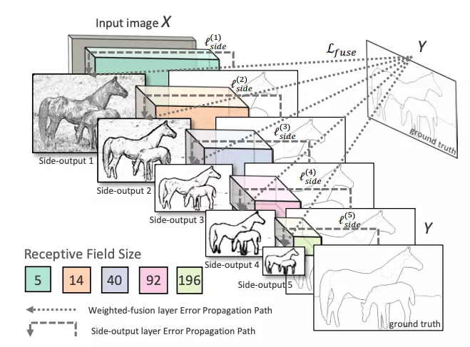
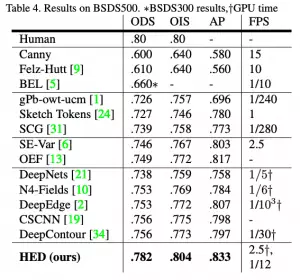
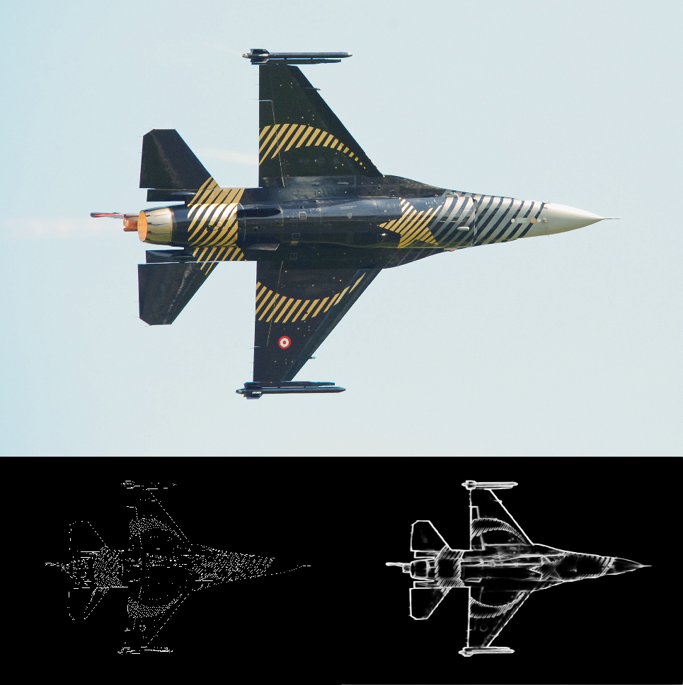

OpenCV ile kenar belirleme için çoğunlukla Canny kenar belirleme yöntemi tercih ediliyor. Canny yönteminin yetersiz kaldığı durumlarda artık dnn ile daha gerçekçi kenar belirleme sonucu göreceğiz.
Canny algoritması John F. Canny tarafından 1986’da geliştirildi. 4 aşamalı bir algoritmadır.
- Noise removal: Resimdeki istenmeyen gürültüyü Gaussian Filter ile azaltarak Canny algoritmasının kenar olarak algılaması engellenir.
- Gradient Calculation: Her piksel için Sobel, Prewitt ya da Robert operatörleriyle gradyan (görüntü yoğunluk derecesi) hesaplanır.
$$Edge\ Graident\ (G) = { \sqrt{G_{x}^{2} + G_{y}^{2}} }$$
$$Angle\ (\theta) = { \tan^{-1}(\frac{G_{y}}{G_{x}}) }$$ - Non-Maximal Suppression: Kenarlarda olmayan pikseller kaldırılır. En yüksek gradyan değeri olan pikseller kenar olarak kabul edilir. Gerçekte gradyan hesabı tek pikselde değilde komşu piksellerle birlikte yapılır.
- Hysteresis Thresholding: Min ve Max threshold değerine bakılarak eldeki piksellerin kenar mı değil mi olduğuna dair son karar verilir. Gradyan değeri Max değerden yüksekse kenar kabul edilir, Min değerden düşükse kenar kabul edilmez. Max ile Min arasında kalıyorsa bağlantılı olduğu kenar var mı diye bakılır eğer varsa kenar olarak kabul edilir.
Bu aşamalardan sonra Canny yöntemi bitmiş ve kenar belirlenmiş olur.
Canny Yönteminin Sorunları
Canny yöntemi yerel değişimlere odaklanarak kenar bulmaya çalışır, resmin içeriğine göre karar vermez. Bu sebeple her durumda güzel ve istenen sonuçlar alınmaz.
İçeriğe bakarak kenar bulma derin öğrenme ya da makine öğrenmesi tabanlı yöntemler ile mümkün hale gelmiştir.
OpenCV ile Derin Öğrenme Tabanlı Kenar Bulma
OpenCV 3.4.3 ve üst sürümlerde kendi içinde entegre DNN modülü barındırmaya başladı. Bu DNN tabanlı kenar bulma yöntemi Holistically Nested Edge Detection ya da HED olarak bilinmeye başladı.

HED, ara katmanların yan çıktılarını kullanır. Önceki katmanların çıktılarına yan çıktı denmektedir ve 5 convolutional katmanın çıktısı asıl tahmini oluşturmak için birleştirilir. Her katmanda oluşturulan özellik haritaları farklı boyutta olduğundan, görüntüye farklı ölçeklerde etkili bir şekilde bakıyor.
HED yöntemi en yüksek doğrulukta sonuç üretmese de DNN tabanlı çözümler içinde en hızlısı sayılabilir.

C++ ile OpenCV DNN Tabanlı Kenar Bulma Yöntemi
Koda geçmeden önce Caffe ile eğitilmiş model ve prototxt dosyalarını edinmek gerekiyor.
OpenCV dnn::Layer sınıfından kalıtım yoluyla MyCropLayer adlı sınıf oluşturup kendi implementasyonumuzu yapacağız.
1 | #include <opencv2/core.hpp> |
MyCropLayer sınıfımızı implement ettikten sonra main.cpp dosyasında ilgili hpp dosyasını çağırdıktan sonra
1 | CV_DNN_REGISTER_LAYER_CLASS(Crop, MyCropLayer); |
bildirimi ile reimplement ettiğimiz sınıfı OpenCV Layer sınıfına kaydediyoruz. Böylelikle OpenCV, Crop sınıfı yerine implement ettiğimiz MyCropLayer sınıfını kullanacaktır.
Yine main.cpp dosyasında bir fonksiyon oluşturalım:
1 | void hedEdgeDetectDNN(cv::Mat &image, std::string prototxt, std::string caffemodel, int size = 128) |
Fonksiyon parametrelerinde &image değişkeni kaynak/hedef resmimizi gösterir. prototxt ve caffemodel değişkenleri ise prototxt ve caffemodel dosya yolunu gösterecektir. Son olarak size değişkeni ise resmin DNN ile işleme girmeden önceki ölçekleneceği boyutu ayarlamak için kullanılacaktır. Boyutun arttırılması kaliteyi arttırırken işlem süresini önemli ölçüde arttırmaktadır.
Fonksiyon içeriğinde ise
readNet ile model dosyası okunur. Daha sonra giriş resmi belirlenen bir boyuta ölçeklenir. Ardından blobFromImage ile görüntüden blob oluşturulup sinir ağına giriş olarak verilir.Tekrar blob’dan görüntü elde etmek için
imagesFromBlob fonksiyonu çağırılır. Tek resim gönderildiği için vectorOfImagesFromBlob[0] konumundaki görüntüyü tekrar eski boyutuna getirip giriş resmine atayarak fonksiyonu bitirir.
Çeşitli Resimler ve Sonuçları
- Orijinal (Üst) Canny (Sol alt) HED (Sağ alt)

Comments